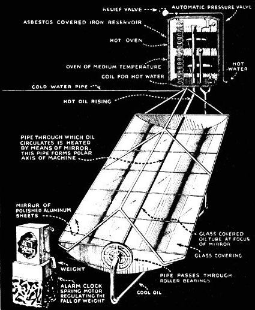
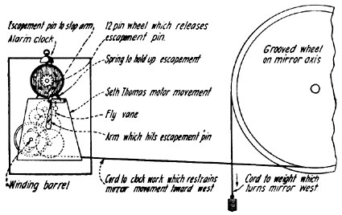

ASSITANT SECRETARY SMITHSONIAN INSTITUTE
Polly past the kettle on
And we'll all take tea.
-Old Song.
A HOT oven without a fire, a kitchen as cool as the parlor, these are the luxuries that come with a solar cooker. There are two ways of making one. The simpler kind is like shat which Mr. W. Adams of Bombay made nearly a half century ago and described in the Scientific American of June 5, 1878. He built of wood an eight-sided cone which he lined inside with mirror glass and hinged upon a board so it could face the sun. The dish to be cooked was enclosed in a blackened, tightly covered pail hung at the center. A glass cover enclosed the pail to keep away wind. If, now, the cone was kept pointed towards the sun, a lot of its rays would be roughly focused upon the blackened pail, and its contents to be cooked could quickly be brought to boiling or, if no water was present, even hotter. Mr. Adams states that the rations of seven soldiers, consisting of meat and vegetables, were thoroughly cooked by it in a couple of hours, in January, the coldest month of the year in Bombay; and that the men declared the food to be cooked much better than in the ordinary manner. The dish is stewed or baked according as the steam is retained or allowed to escape.
But suppose the sun goes behind a cloud just as one wants to get dinner, and the clouds hangs provokingly in front of the sun for an hour though the rest of the sky remains clear. Such a catastrophe, a few times repeated, would be apt to make the men of the house kick the sun-cooker out into the brush.
To avoid this unreliability in solar cooking a new scheme designed to keep the food cooking during nights and cloudy weather has been tried on Mount Wilson, California, at the solar observatory of the Smithsonian Institution. Instead of hanging the dish to be cooked directly in focus of the sun-rays, we provided a hot reservoir of oil above the mirror in which were ovens for the cooking. In order to carry heat from the focus of the mirror to the ovens, there was a circuit of oil pipe running up from the mirror focus to the top of the reservoir and back from the bottom of the reservoir underneath the mirror to complete the circuit. This plan is exactly like the gravity water circulation used with cook stoves and furnaces to heat a reservoir of water for the house, only that gas engine oil, instead of water, had to be used for the solar cooker, so that baking temperatures much higher than the boiling point of water would be possible.
In the contrivance as shown in the illustration, the sun-rays are focused by a great concave parabolic sheet of shiny metal upon a blackened brass tube containing the oil. The tube must lie so as to point at the polar star, and the metal mirror must rotate around it to follow the sun from east towards west every day.
In order that the solar heat may not be wasted, or the mirror be dimmed by dust, the whole top of it, about 10 feet by 7 feet in area, is covered by 10 sheets of flat window glass, laid on a steel frame work. This glass may be easily cleaned occasionally, so that the sun-rays can pass through it freely and it keeps out the wind currents which would tend to cool the focus-tube. To still further prevent loss of heat, the focus tube, which is about 1 1/2, inches in diameter, is surrounded by a glass tube about twice the diameter. Notwithstanding its two glass protectors, more heat is lost from the focus tube than from all other parts of the apparatus. All the other parts, including the reservoir and connecting tubes, are covered to a thickness of about six inches with layers of asbestos and cotton-batting enclosed by bright steel metal to keep out the rain.
The iron reservoir, 40 X 40 X 120 cm. (16" X 16" X 4') outside, has approximately 20,000 cm 2 (21.5 sq. ft.) area. It is protected from wind by its galvanized iron case, and from heat conduction by 10 cm. (4") of boxwood and 10 cm. (4") of cotton wool, moderately compressed, on every side.
The mirror itself, 10 feet long, 7 feet wide, was made up of structural steel in five sections each 2 feet in length. Each section was framed by a pair of L-shaped members bent to the form of a parabolic bow and its chord. On the front of each pair of curved L-irons was fastened a thin sheet of smooth steel which itself, if it were polished, would accordingly have formed a mirror, but as this would have been a very poor reflector, it was proposed to cover the steel sheets with sheets of tin-foil and this experiment was first tried. Owing to an unfortunate leakage of oil which occurred at a certain joint in the pipe, the tin-foil became very dirty before the end of the experiments, but this was not the most serious trouble. It was found that no suitable means of fastening the tin-foil to the sheets of steel could be arranged. For as the mirror became heated, as the experiments went on, the tin-foil puffed up in blisters all over the surface and so spoiled the definition of the mirror. Accordingly, the preliminary experiments, although very promising, were not satisfactory, for the reason that no suitable mirror surface had been provided. An order was accordingly given for sheets of polished aluminum, somewhat thicker than the tinfoil to take its place.
The polished aluminum sheets were scrtwed to the parabolic steel backing to serve as a mirror surface. Their reflecting flower was measured by fastening a piece of aluminum sheet to a flat board and attaching it as a mirror to an instrument to reflect sunlight. Two observers then observed the sun's brightness, the one close to and pointed at this mirror, the other pointed directly at the sun The mean of 5 pointings to different parts of the mirror indicated its average reflecting power as 77.3 + 2.2 per cent. In several months' use no apparent change appeared in the hot mirror. Some loss of heat occurred by imperfect shape of the aluminum mirror surface, so that a small proportion of the rays reflected shot by on the sides of the oil tube. This proportion, thought it could not be measured accurately, seemed small, perhaps 10 or 15 per cent at most.
Recalling that the mirror was covered by window glass only fairly clean, as it could not be continually kept in the condition of a lens or prism, we may set the transmission of it at 85 per cent. Further recalling that the oil tube was protected by a glass tube, another loss of 15 per cent may be admitted for it. Within this glass was the lampblackpainted tube whose absorption tray be set at 95 per cent. Recalling further that no provision was made for the seasonal motion of the sun, so that the mirror was right only on the equinoxes, a small loss occurred at the mirror ends by rays not reaching the mirror surface and reflections not reaching the tube. This diminution of the effective size of the mirror varies with the time of the year. An average value for it is 5 per cent. A great loss, not a feature of the instrument, but of its location, was due to the shade of trees that could not well be removed. This practically cut off all sun rays after 1 o'clock in the afternoon, besides producing a little shade in the early morning, and thus amounted to a loss of about 40 per cent during the day.
Summing up the seven transmissions Glass, 85 per cent; aluminum, 77 per cent; glass, 85 percent; focus, 85 per cent ; blackening, 95 per cent; declination, 95 percent; shade, 60 per cent.; or 85 X 77 X 85 X 85 X 95 X 95 X 60 = 25.6 per cent.
It thus appears that only about one-fourth of the sun's heat available during the day was collected to warm the oil. Of course, the shade of the trees was absent much of the time. The factor would then rise to 43 per cent. The loss at focus could be avoided by more accurate construction, and perhaps means could be found to keep the glasses clean enough to raise their transmission to 90 per cent. It would be impracticable to substitute silver on front of glass for the aluminum, and silver on back of glass reflects but little better than aluminum, besides being costly, heavy and fragile. Hence we may set the maximum attainable efficiency at 90 X 77 X 90 X 95 X 95 = 56 per cent.
Of this possible maximum efficiency, by neglecting the tree's shading, we attained 77 per cent.
The mirror motion is arranged in a very cheap but effective way. A large grooved wheel attached to the mirror has hung from its outer edge a wire and heavy weight which tends to turn the mirror westward. But on a groove in a second smaller part of the wheel is another wire wound around the wheel in the opposite way, which restrains the turning of the mirror. This second wire ends in a clock-work, so that as the mirror turns westward the clock-work hums along pretty fast. But soon a hand like a clock hand, which it carries, hits a pin, and the motion is stopped. Then the mirror must wait motionless until a little common alarm clock with a 12-pin wheel on its back has ticked off about two minutes and released the catch which held back the mirror. This happens once each five minutes. So the mirror is always within a very small angle of exactly right in its position to focus the sunrays on the hot tube of oil. A single setting of the mirror to face the east in the morn. ing is all the attention it needs. The clockwork does the rest.
But why does the oil run uphill from the mirror to the top of the reservoir? Because the heating of the oil makes it expand, and become lighter. So the hot oil tends to rise to the top like froth on a boiling kettle. The cooler, heavier oil at the bottom of the reservoir sinks to take the place vacated by the hot oil in the tube. In this way gravity keeps up a continual circulation as long as the sun shines.
There are two ovens inserted, one near the top, the other near the bottom of the reservoir and surrounded on all sides, except where the door opens, with oil. The upper one is always hottest because the hotter oil is lighter and keeps on top. Accordingly, bread-baking must be done in the upper oven, but cooking meat, vegetables, or breakfast foods may be done in the lower one. The upper oven reaches a temperature of more than 310° Fahrenheit during sunny days, and sinks only to about boiling temperature, 212° Fahrenheit, at night.
All kinds of cooking except frying can be done with this range of temperatures. The dishes are prepared in a cool kitchen, and carried just outside the door to be placed in the oven. That there may be no danger of burning anything, a self-regulator of temperature was devised. This is a float on the top of the oil in the reservoir which, when the oil is below a desired temperature, and therefore below a certain level, opens a side pipe about half way up so that the lower half of the oil in the reservoir does not enter the circulation. But if it gets hotter this side pipe is closed by the float, and then all the cooler oil enters into circulation from the bottom. Thus it is safe to leave the dinner to cook without watching.
|
 At the Right Is Shown the Solar Cooker Built By Dr. C. G. Abbot. Polished Aluminum Sheets Serve As the Reflectors. This System Is Today Being Employed. |
 The Method of Regulating the Mirror Is Indicated In the Drawing At the Left. An Alarm Clock With a Twelve-Pin Wheel Releases An Escapement Pin Secured To a- Motor Movement. The Weight Turns the Mirror To the West a Fixed Distance Every Five Minutes. |
|